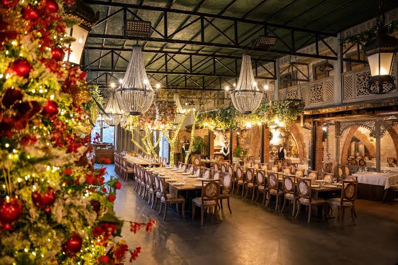
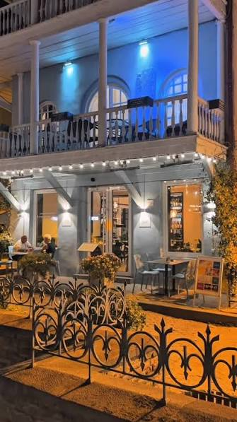

„ეთნოგრაფი“, ტრადიციული ქართული რესტორანი თბილისში, რომლის გაცხადებული მისია, დასაწყისშივე ქართული კულტურის, გასტრონომიისა და სტუმარმასპინძლობის ტრადიციის პოპულარიზება იყო, სექტემბრიდან, განახლებული ვიზუალური იდენტობით უბრუნდება მომხმარებელს. რესტორანი „ეთნოგრაფი“ ქართული სტუმარმასპინძლობის ერთგვარი მუზეუმია, სადაც ნაციონალური სამზარეულო, რეგიონული კერძების სახასიათო გემოები, ინტერიერში შენარჩუნებული კულტურული არტეფაქტები და სტუმრის მიღების საუკეთესო ქართული ტრადიციები, ერთად იყრის თავს.

(Bistro Conili) არის გამორჩეული ქართული რესტორანი ძველ თბილისში, აბანოთუბნის შუაგულში (აბანოს ქუჩა 23). ის ცნობილია მყუდრო, დახვეწილი ატმოსფეროთი და ტრადიციული ქართული სამზარეულოს თანამედროვე, საინტერესო ინტერპრეტაციით. სტუმრები განსაკუთრებით აღნიშნავენ მომსახურების მაღალ ხარისხს, გემოვნებიან ინტერიერს და კერძების მრავალფეროვნებას. მენიუში პოპულარულია თბილისური ხინკალი, აჭარული ხაჭაპური და ჩებურეკი. ბისტროში ასევე დაგხვდებათ ქართული ღვინოების საუკეთესო არჩევანი.
